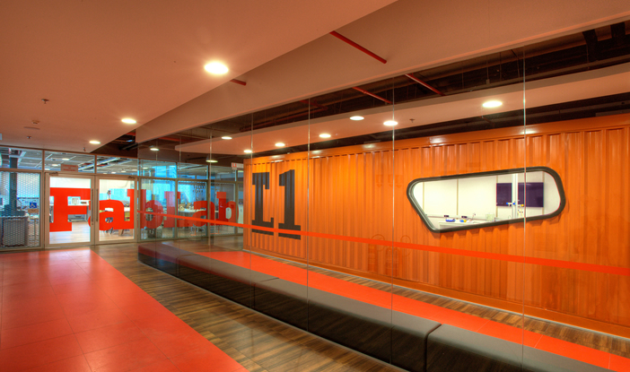

Clicando nas páginas ao lado você poderá conferir alguns dos trabalhos que devem ser entregues ao longo dos três primeiros semestres do curso de graduação de engenharia no Insper.
Note que como o currículo do Insper é altamente diversificado e busca integrar várias áreas do conhecimento, portanto a existência de um projeto em uma categoria não siginifica que ele usou única e exclusivamente as ferramentas descritas em cada uma das páginas.